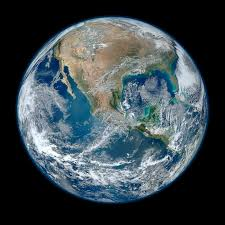
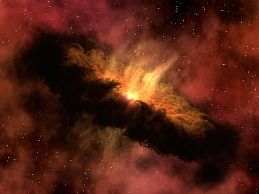

| 
The Blue Marble, Apollo 17, December 1972 |
Earth is the third planet from the Sun and the only astronomical object known to harbor life.
This is enabled by Earth being an ocean world, the only one in the Solar System sustaining liquid
surface water. Almost all of Earth's water is contained in its global ocean, covering 70.8% of Earth's crust.
The remaining 29.2% of Earth's crust is land, most of which is located in the form of continental landmasses
within Earth's land hemisphere. Most of Earth's land is somewhat humid and covered by vegetation, while large sheets of ice at Earth's polar deserts retain more water than Earth's groundwater, lakes, rivers and atmospheric water combined. Earth's crust consists of slowly moving tectonic plates, which interact to produce mountain ranges volcanoes, and earthquakes. Earth has a liquid outer core that generates a magnetosphere capable of deflecting most of the destructive solar winds and cosmic radiation. Earth has a dynamic atmosphere, which sustains Earth's surface conditions and protects it from most meteoroids and UV-light at entry. It has a composition of primarily nitrogen and oxygen. Water vapor is widely present in the atmosphere, forming clouds that cover most of the planet. The water vapor acts as a greenhouse gas and, together with other greenhouse gases in the atmosphere, particularly carbon dioxide (CO2), creates the conditions for both liquid surface water and water vapor to persist via the capturing of energy from the Sun's light. This process maintains the current average surface temperature of 14.76°C (58.57 °F), at which water is liquid under normal atmospheric pressure. Differences in the amount of captured energy between geographic regions (as with the equatorial region receiving more sunlight than the polar regions) drive atmospheric and ocean currents, producing a global climate system with different climate regions, and a range of weather phenomena such as precipitation, allowing components such as nitrogen to cycle. |
| The oldest material found in the Solar System is dated to 4.5682 +0.0002
Ga (billion years) ago. By 4.54±0.04 Ga the primordial Earth had formed. The bodies in the Solar System formed and evolved with the Sun. In theory, a solar nebula partitions a volume out of a molecular cloud by gravitational collapse, which begins to spin and flatten into a circumstellar disk, and then the planets grow out of that disk with the Sun. A nebula contains gas, ice grains, and dust (including primordial nuclides). According to nebular theory, planetesimals formed by accretion, with the primordial Earth being estimated as likely taking anywhere from 70 to 100 million years to form. Estimates of the age of the Moon range from 4.5 Ga to significantly younger. A leading hypothesis is that it was formed by accretion from material loosed from Earth after a Mars-sized object with about 10% of Earth's mass, named Theia, collided with Earth.It hit Earth with a glancing blow and some of its mass merged with Earth. Between approximately 4.1 and 3.8 Ga, numerous asteroid impacts during the Late Heavy Bombardment caused significant changes to the greater surface environment of the Moon and, by inference, to that of Earth. |

A 2012 artistic impression of the early Solar System's protoplanetary disk from which Earth and other Solar System bodies were formed |
||||||||
|
|||||||||
|---|---|---|---|---|---|---|---|---|---|
| Earth's atmosphere and oceans were formed by volcanic activity and outgassing. Water vapor from these sources condensed into the oceans, augmented by water and ice from asteroids, protoplanets, and comets. Sufficient water to fill the oceans may have been on Earth since it formed. atmospheric greenhouse gases kept the oceans from freezing when the newly forming Sun had only 70% of its current luminosity.By 3.5 Ga, Earth's magnetic field was established, which helped prevent the atmosphere from being stripped away by the solar wind. | |||||||||